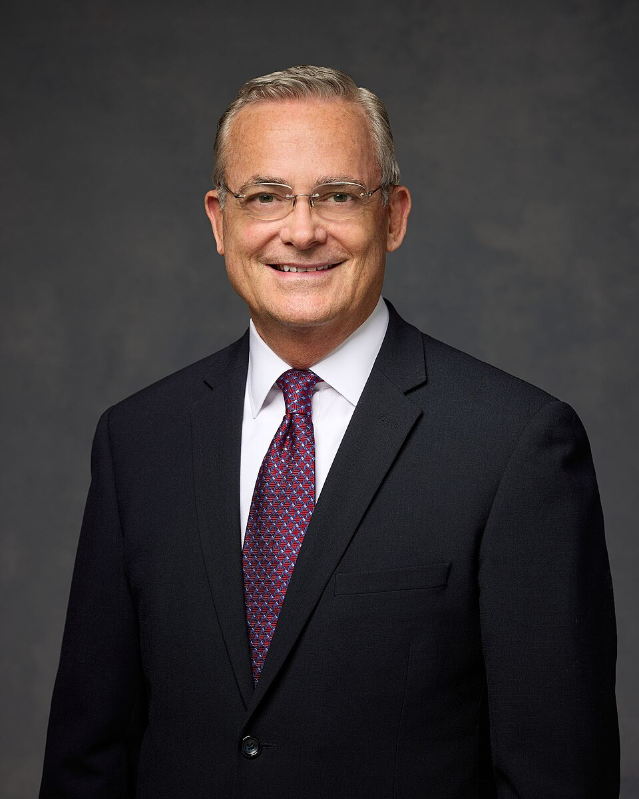
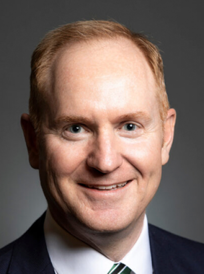

Takeaways General Conference Oct. 2026
The Hour of Your Mission Is Come
Bishop Sean Douglas
This one really called me out because I know I spend way too much time distracted by my phone and scrolling instead of doing what I actually need to do. It made me realize that Satan doesn't always try to get us to do huge bad things, sometimes he just tries to keep us distracted so we waste our potential. I'm definitely going to try putting my screen away more so I can focus on the important stuff God wants me to do right now.
Jesus Lives to Lift

Elder Patrick Kearon
I really liked the part where he talked about Jesus being our "ever-rising air" because sometimes school and just growing up feels super overwhelming and heavy. It made me realize I don't have to figure everything out on my own, since He is always right there helping me through the hard stuff. Knowing there's no limit to how much I can grow with His help honestly takes a lot of the pressure off my shoulders.
Comfort from the Holy Ghost

Elder Matthew J. Eyring
This talk stood out to me because I get anxious a lot, and it reminded me that true peace comes from the Holy Ghost, not just when my problems randomly disappear. I learned that if I want to feel the Savior's comfort, I need to actually make time to feel the Spirit instead of just rushing through my homework and my day. It’s a really good reminder to focus on things like seminary or my personal prayers so I can keep that calm feeling with me when things get crazy.